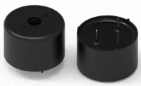
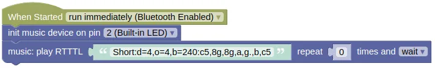

Music

Plays tones, musical notes, and songs in Ring Tone Text Transfer Language (RTTTL) format.
You can find many RTTTL songs online (eg. https://picaxe.com/rtttl-ringtones-for-tune-command/). No special softwares are required to compose RTTTL songs, but something like this... https://eddmann.com/nokia-composer-web/ can make the process easier.
Pins
The music extension does not require any specific hardware. You can use it with a passive piezoelectric speaker, earphones, or speakers (...through an amplifier).
Wiring

Depending on the type of speaker you're using, the wiring may differ.
Code
This code will play a short music segment.
Blocks

Python
import music
music_device = music.Music(2)
music_device.play_rtttl('Short:d=4,o=4,b=240:c5,8g,8g,a,g.,b,c5', wait=True, loops=0)
Results
You should hear a short music segment play from the speakers.
class Music - play music
Constructors
music.Music(pin)
Creates an Music object.
The arguments are:
pinAn integer representing the pin connected to the speaker or amplifier.
Returns an Music object.
Methods
Music.play_tone(freq, ms, wait=True)
Plays a tone of the specified frequency.
The arguments are:
-
freqAn integer representing the frequency to play in Hz. -
msAn integer representing the duration of the tone in milliseconds. -
waitA boolean. If True, the method will block until the tone completes playing. If False, you must runupdate()frequently or the tone will not end.
Returns None.
Music.play_notes(note, wait=True, loops=0)
Plays notes in the RTTTL format.
The arguments are:
-
noteA string representing RTTTL notes (eg. '2b4': Half note, B, 4th octave, '1a#3' Full note, A sharp, 3rd octave). If there are multiple notes, they should be separated by a comma (eg. '2b4,1a#3'). Case insensitive. -
waitA boolean. If True, the method will block until the notes completes playing. If False, you must runupdate()frequently or the notes will not play correctly. -
loopsAn integer specifying how many times to loop the notes. The default 0 means that it will play once without repeating. If set to a negative value (eg. -1), the notes will loop forever.
Returns None.
Music.play_rtttl(tune, wait=True, loops=0)
Plays a note in the RTTTL format.
The arguments are:
-
tuneA string representing an RTTTL tune. An RTTTL tune contains a title, settings, and notes. -
waitA boolean. If True, the method will block until the notes completes playing. If False, you must runupdate()frequently or the notes will not play correctly. -
loopsAn integer specifying how many times to loop the notes. The default 0 means that it will play once without repeating. If set to a negative value (eg. -1), the notes will loop forever.
Returns None.
Music.stop()
Stop playing.
This is only useful if wait is set to False when starting the music; if set to True, the music will always play until completion.
Returns None.
Music.update()
Update the music.
You must run this frequently if wait is set to False.
The return value lets you know if a new note is started, this can be useful if you want to synchronize the music to something else (eg. lights). If you don't need it, you can just ignore the return value.
Returns a integer representing the frequency played whenever a new note is played. After the start of a new note, it will return 0 until another note is played. At the end of the music, it will return -1.
Music.is_playing()
Checks if the music is still playing.
Returns False if the music has completed, else returns True.